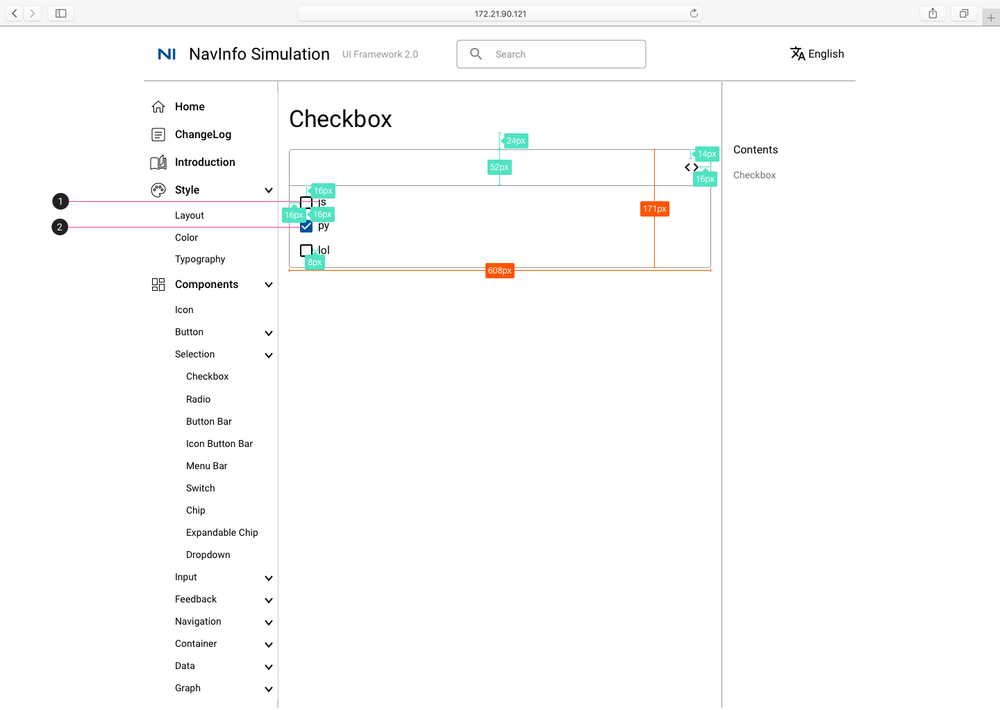
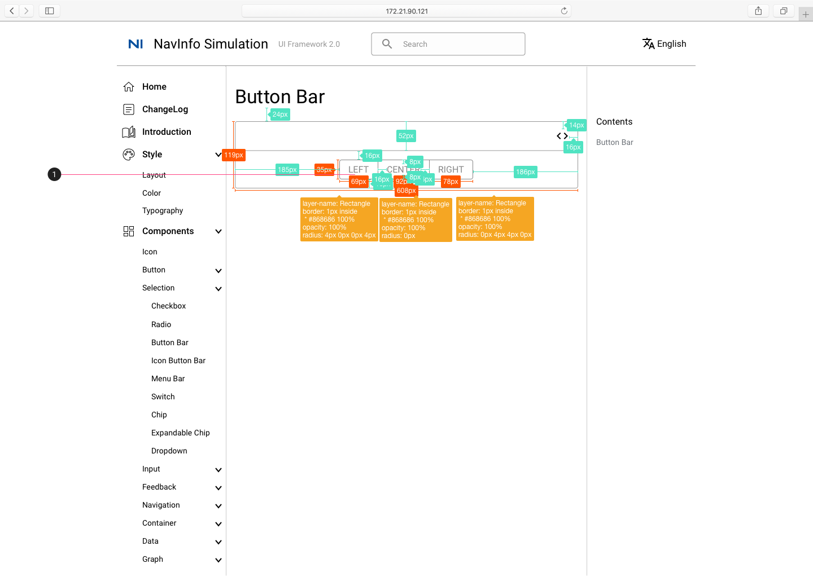
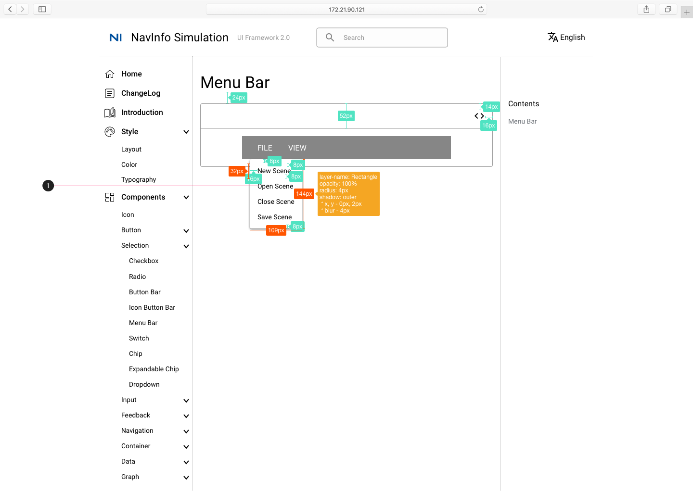
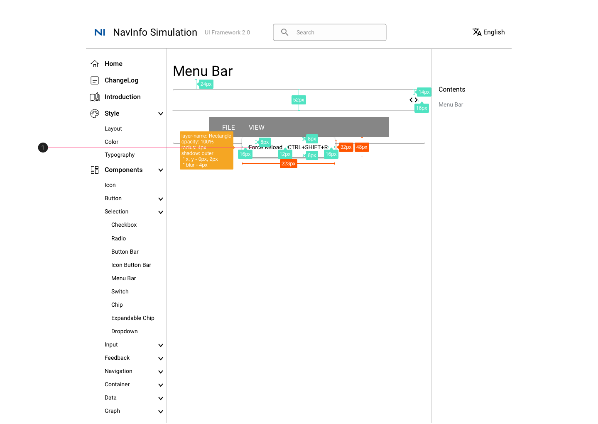
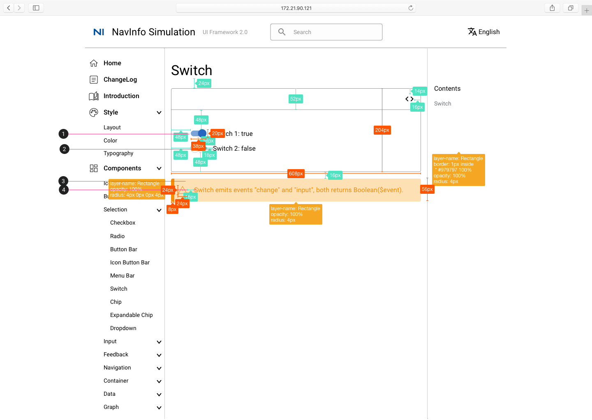
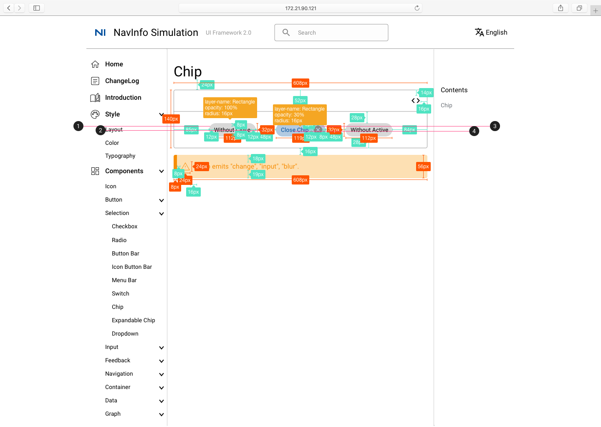
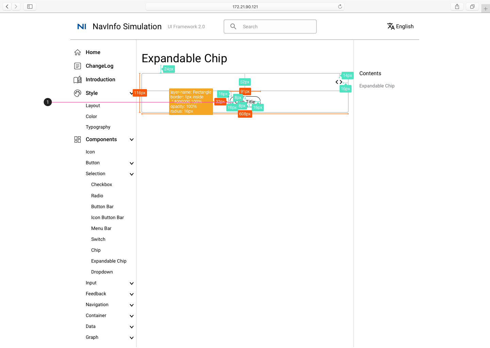
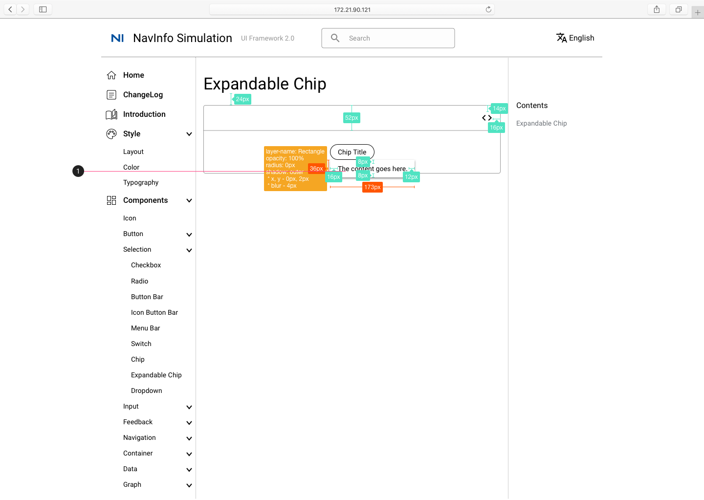
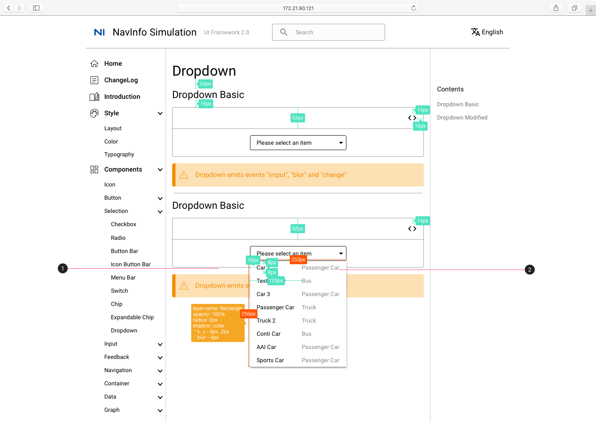

选择器 Selection
Checkbox 多选

- 选项字体：Body 1
- 选中状态，颜色为#004F9D
Ratio 单选

- 选项字体：Body 1
- 选中状态，颜色为#004F9D
- 禁用状态，颜色为#868686
Button Bar

- Button Bar 字体：Button #868686
Icon Button Bar

- 字体：Body 1
Menu Bar

- 填充颜色：#868686
- 字体：Body 1 #FFFFFF

- 点击FILE，出现选项框，选项框内字体：Body 2

- 点击VIEW，出现选项框，选项框内字体：Body 2
Switch

- Switch 组件，蓝色为开，灰色为关
- 字体：Body 1
- 圆角矩形颜色：#FDE0B3
- 右侧矩形颜色：#F68D05
Chip

- 圆角矩形颜色：#868686
- 字体：Body 2
- 圆角矩形颜色：#BAE2FF
- 字体：Body 2 #004F9D

点击close按钮后，原chip消失，剩余chip居中
Expandable Chip

- Clip Title: 字体Body 2

- 点击Clip Title 显示内容：字体Body 2
Dropdown

- 字体：Body 2
Dropdown Basic

- 字体：Body 2

- 字体：Body 2
- 字体：Body 2 #868686